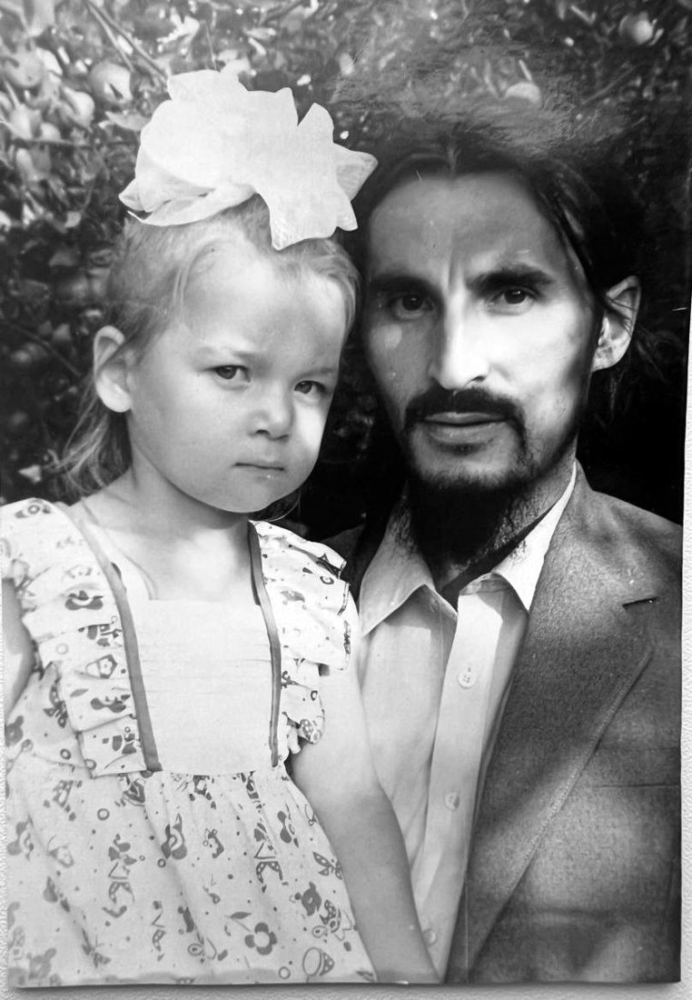
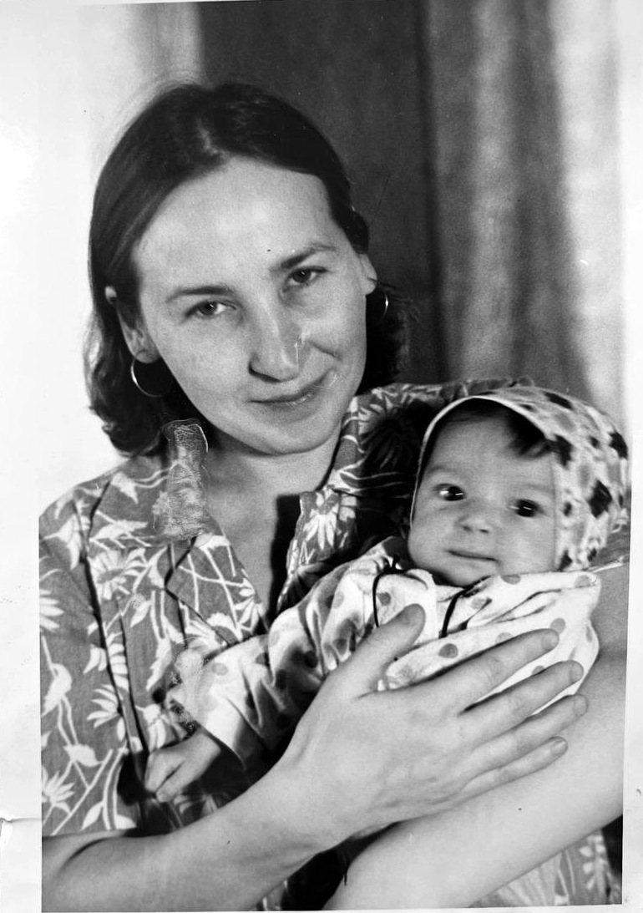

Сегодня мой день рождения. В этот день принято получать подарки, а я хочу подарить сама.
Две новые песни — «Папе» и «Маме». Без повода и без «за что». Просто потому, что вы дали мне всё, что могли дать. И даже больше.
Папе
Знаю всегда: в моём ДНК мой отец. Остальное не важно.
Мне можно упасть — и не страшно. Это чувство со мной с детства, и оно от тебя, папа.
Ты никогда не просил внимания. Не требовал послушания, не ждал почитания. Ты просто есть — и всегда рядом тогда, когда надо.
Жизнь бывает нелёгкой. Бывает больно и страшно. Но я точно знаю, на чём стою. На тебе.

Премьера · новая песня
ПапеСлова песни
ПрипевТы мой отец, ты мой Бог, ты мой дом,
защита и пристань в ненастье.
Я обещаю тебе, мой родной,
я буду всегда твоим счастьем.
Куплет 1Мне можно упасть, и споткнуться не страшно,
ничего не боюсь, и душа нараспашку.
Мне Бог подарил навсегда оберег —
и это мой самый родной человек.
ПрипевТы мой отец, ты мой Бог, ты мой дом,
защита и пристань в ненастье.
Я обещаю тебе, мой родной,
я буду всегда твоим счастьем.
Куплет 2Он просто есть и не просит внимания,
ни послушания, ни почитания.
Он всегда рядом, тогда, когда надо.
Он словно Бог. Это мой ПАПА.
ПрипевТы мой отец, ты мой Бог, ты мой дом,
защита и пристань в ненастье.
Я обещаю тебе, мой родной,
я буду всегда твоим счастьем.
БриджОн тот, кто меня никогда не предаст,
он душу свою, если надо, отдаст.
Его похвала — это награда.
Он лучший на свете мужчина. Правда!
ФиналЖизнь иногда совсем не легка,
больно бывает и страшно,
но знаю всегда: в моём ДНК
мой отец. Остальное не важно.
ПрипевТы мой отец, ты мой Бог, ты мой дом,
защита и пристань в любое ненастье.
Я обещаю тебе, мой родной,
я навсегда буду твоим счастьем.
Маме
Мама, я тоже теперь мама. Это так странно, но я тебя понимаю теперь.
Эту песню я не смогла бы написать раньше. Мне нужно было самой стать мамой, чтобы понять тебя по-настоящему.
Не спать по ночам. Отдавать всё, что есть. Прощать. Долго ждать. Теперь у меня четыре дочери, и я каждый день узнаю в себе тебя.
Было немало дней, когда я тебя обижала. Теперь мне понятно, мама. И каково это — уставать так, как уставала ты, — тоже понятно.
Мои зелёные глаза — от тебя. Черты лица, сила внутри, нежность — от тебя. Я похожа на тебя, но я не такая, как ты. Потому что ты — святая.

Премьера · новая песня
МамеСлова песни
ПрипевМама, я тоже теперь мама.
Это так странно,
но я тебя понимаю теперь, мама.
Было немало —
я тебя обижала,
но теперь всё стало
мне понятно, мама.
Куплет 1Только мама
может так любить,
по ночам не спать,
всё, что есть, отдать.
Только мама
может всё простить,
может долго ждать
и тебе сказать:
«Дочь, ты как я точь-в-точь,
чем тебе помочь?»
Все невзгоды прочь,
когда ты рядом, мама.
ПрипевМама, я тоже теперь мама.
Это так странно,
но я тебя понимаю теперь, мама.
Было немало —
я тебя обижала,
но теперь всё стало
мне понятно, мама.
Куплет 2Знаешь, мама,
ты мне так нужна.
Обними меня, ма,
мне это надо.
Знаешь, мама,
ты моя звезда.
Ты свети всегда,
чтобы знать могла я,
что ты всегда рядом.
ПрипевМама, я тоже теперь мама.
Это так странно,
но я тебя понимаю теперь, мама.
Было немало —
я тебя обижала,
но теперь всё стало
мне понятно, мама.
БриджМои глаза зелёные от тебя,
и черты лица твои.
Моя сила внутри,
моя нежность души —
это всё от тебя, это ты.
Ты богиня любви,
красоты, доброты,
твоя нежность и сила без края.
Твои во мне есть черты,
но я не такая, как ты,
потому что ты — святая.
Финальный припевМама, я тоже теперь мама.
Это так странно,
но я тебя понимаю теперь, мама.
Было немало
дней, когда я уставала,
и теперь мне понятно,
каково это — быть мамой.
Почти любую любовь в жизни приходится заслуживать: быть хорошей, удобной, успешной, правильной. Родительская любовь — исключение. Ей не важны оценки, ошибки и достижения. Она просто есть.
Пока ты ребёнок, она кажется чем-то само собой разумеющимся. Когда появляются свои дети, становится видно, сколько за ней стоит: бессонных ночей, терпения, тишины, в которой тебя ждут.
Папа, мама, спасибо вам. За жизнь. За дом, который до сих пор мой дом. За то, что я могу падать и не бояться.
Я обещаю: я буду всегда вашим счастьем.
Ваша Катя
Если эти песни отозвались в вас, включите их своим родителям. Или просто позвоните им сегодня.